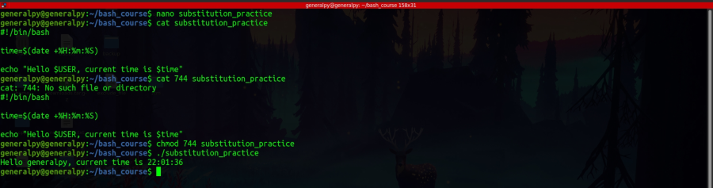

Command substitution
Command substitution is a feature in bash where you can get output of a command and do stuff with it instead of flushing it to stdout.
Syntax of command command substitution is similar to the syntax of variable expansion.
$(command)This command will return the output of the command inside parentheses which we can store in variables or use with other commands.
#!/bin/bash
time=$(date +%H:%m:%S)
echo "Hello $USER, current time is $time"

Here in date command + is used to show that we are giving date command extra formatting options and then we have formatting string.
| Linked file: 7.1 Command Substitution Project - Brief.pdf |

#!/bin/bash
currdir=$(pwd)
echo "Hello ${USER,}, current working directory is $currdir"
echo "Creating backup of home directory in $currdir"
backup_name=$currdir/home_backup_"$(date +%H:%m:%S)"
tar -czf ${backup_name} $HOME
echo "Backup created with name $backup_name"